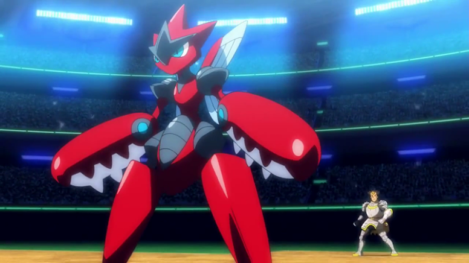
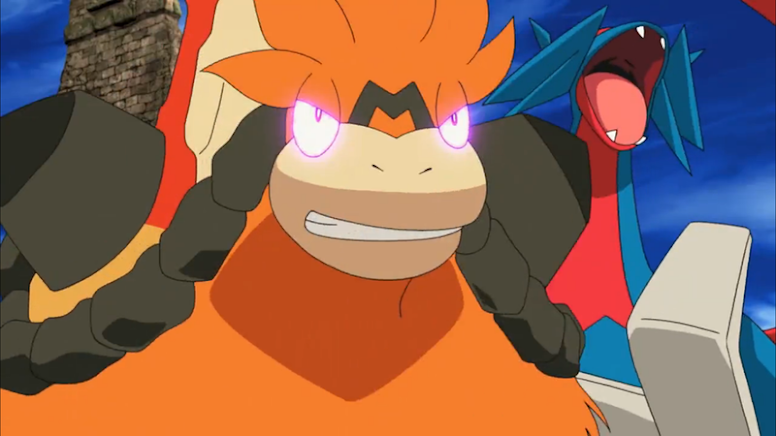
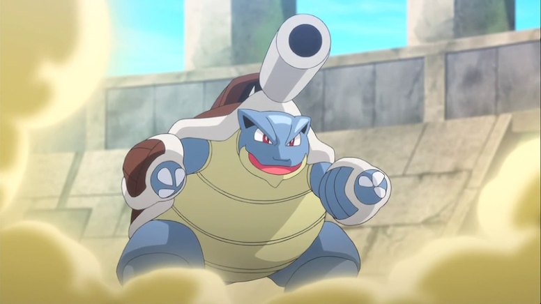
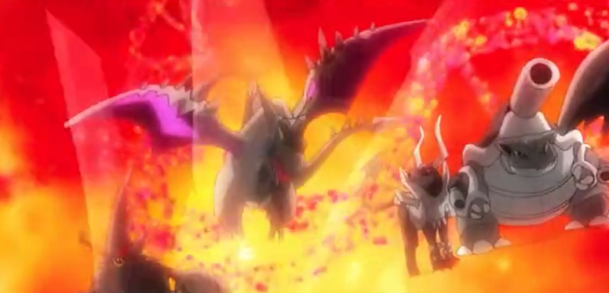

As Mega Evoluções no Anime Pokémon
A Mega Evolução é uma mecânica introduzida na 6ª geração de Pokémon, descoberta pela primeira vez na região de Kalos, e consiste em fazer com que certos Pokémon atinjam o máximo de seu poder e assumam uma nova forma temporária. Para esse poder ser atingido é necessário que os Pokémon estejam combinados com um forte vínculo com seus treinadores e isso é possível, também, graças a dois itens conhecidos como Pedra Chave (carregado pelo treinador) e a Mega Pedra (carregada pelo Pokémon).
Durante uma batalha, alguns Pokémon conseguem megaevoluir e, assim, assumir uma nova forma, podendo alterar suas estatísticas de base, os tipos e as habilidades. Como a Mega Evolução é temporária, o Pokémon retorna para sua forma final com o término da batalha. Cada Pokémon capaz de megaevoluir possui a sua própria Mega Pedra.
Em Pokémon a Série: XY, o anime Pokémon apresentou vários Pokémon capazes de megaevoluir. Algumas Mega Evoluções foram exibidas durante a jornada de Ash e seus amigos pela região de Kalos, outras foram apresentadas apenas nos filmes, enquanto outras ainda foram vistas apenas no especial da Mega Evolução. Algumas Mega Evoluções continuaram a marcar presença no anime nas séries seguintes. De modo geral, todas essas aparições se passam no universo do anime.
Abaixo você vai conhecer as Mega Evoluções que apareceram no anime em algum episódio da série principal.
Mega Blaziken
A primeira Mega Evolução de fato a aparecer no anime em Kalos foi um Mega Blaziken. Ele apareceu nos episódios 806 - Kalos, Onde os Sonhos e Aventuras Começam! e 807 - Perseguição na Cidade de Lumiose!, quando foi mostrado o Pokémon e seu treinador, que utilizava uma máscara, salvando Ash de uma queda. Esse mesmo Mega Blaziken apareceu em vários outros episódios ajudando seus amigos nos momentos em que mais estavam precisando. O treinador de Mega Blaziken é Meyer, pai de Clemont e Bonnie.
Mega Gardevoir
Mega Gardevoir apareceu no episódio 834 - Os Elos da Evolução! com sua treinadora Diantha, a campeã de Kalos. No episódio foi mostrado Mega Gardevoir usando o seu ataque Psíquico para impedir a Equipe Rocket de fazer o mal. Diantha e Mega Gardevoir voltariam a aparecer em outros episódios da série, um deles tendo uma batalha contra Ash e seu Ash-Greninja.
Uma outra Mega Gardevoir apareceu na série, desta vez no filme Volcanion e a Maravilha Mecânica ao lado de sua treinadora Kimia, as quais tiveram um importante papel no filme. Dessa vez a Mega Gardevoir veio em sua forma Brilhante.
Mega Lucario
Mega Lucario fez a sua estreia no episódio 838 - Uma Aura Furiosa! quando Korrina usou seu poderoso Pokémon em uma batalha contra Ash. No episódio 849 - Origens da Mega Evolução! foi mostrado um flashback em que um dos ancestrais do avô de Korrina encontrou um item que se assemelhava com um mega pedra, indicando que o Mega Lucario teria sido a primeira mega evolução do mundo Pokémon.
Atualmente, Ash finalmente conseguiu adquirir uma mega evolução com seu Lucario e foi mostrado ambos tendo um batalha contra Bea pelo Campeonato da Coroação Mundial.
Mega Ampharos
Mega Ampharos fez uma breve aparição no anime durante uma explicação sobre as mega evoluções ministrada pelo Professor Sicômoro. Posteriormente, Korrina falou a Ash e seus amigos sobre um treinador que conheceu que possuía um Mega Ampharos. No entanto, em nenhuma das menções Ash e seus amigos chegaram a conhecer o Mega Ampharos pessoalmente. No especial da Mega Evolução, Alain e seu Mega Charizard X também enfrentaram um Mega Ampharos.
Mega Mawile
No episódio 840 - Os Elos da Mega Evolução! foi mostrado Korrina e seu Mega Lucario tendo uma batalha contra uma treinadora chamada Mabel e seu poderoso Mega Mawile. Durante a batalha, Mabel supervisionava os comandos de Korrina e sua ligação com Lucario.
Mega Garchomp
No episódio 876 - O Mega Elo de Garchomp! foi mostrado o Garchomp do Professor Sicômoro megaevoluindo e liberando todo o seu poder durante uma pesquisa.
Além disso, um Mega Garchomp com seu treinador Remo também apareceu no especial da Mega Evolução batalhando contra Alain e seu Mega Charizard X, com Alain vencendo a batalha.
Mega Audino
Mega Audino apareceu no episódio 905 - Uma Batalha Gigante com Mega Resultados! quando a Enfermeira Joy foi capaz de megaevoluir seu parceiro de Centro Pokémon para impedir a Equipe Rocket de roubar os Pokémon que ali estavam.
Mega Abomasnow
Mega Abomasnow apareceu na segunda batalha de Ash no ginásio da cidade de Snowbelle na região de Kalos. Ash havia batalhado antes contra Wulfric, mas perdeu. Ele então retorna para uma revanche na qual Wulfric utilizou seu poderoso Pokémon megaevoluído.
Mega Charizard X
Mega Charizard X é o principal Pokémon de Alain, que fez a sua estreia no especial da Mega Evolução e se tornou um dos principais rivais de Ash na região de Kalos. Mega Charizard X tende a ser um dos Pokémon mais famosos da temporada e talvez de todas as Mega Evoluções existentes. O Mega Charizard X foi capaz de derrotar quase todas as Mega Evoluções que apareceram no anime, assim como o Ash-Greninja na final da Liga Kalos.
Mega Charizard Y
O Mega Charizard Y apareceu ao lado de um treinador chamado Trevor, um dos amigos de Ash na região de Kalos. Ele e seu Pokémon batalharam contra Alain e seu Mega Charizard X durante a Liga de Kalos.
Mega Sceptile
Mega Sceptile apareceu como sendo o parceiro principal de Sawyer, um dos rivais de Ash na região de Kalos. Eles travaram uma dura batalha na Liga Kalos, a qual acarretou na vitória de Ash, apesar de Sceptile possuir a vantagem de Tipo sobre Ash-Greninja.
Mega Metagross
Steven Stone e seu Mega Metagross Brilhante apareceram pela primeira vez no especial da Mega Evolução em uma batalha contra Alain e seu Mega Charizard X. Steven e seu Pokémon apareceram mais tarde em um episódios importantes do anime, durante a realização do plano principal da Equipe Flare ao final da Liga Kalos.
Mega Houndoom
Mega Houndoom apareceu no especial da Mega Evolução ao lado de sua treinadora Malva, membro da Elite dos Quatro de Kalos. Eles batalharam contra Alain e seu Mega Charizard X, e perderam a batalha. Posteriormente, Malva e seu Pokémon também apareceram no anime durante a realização do plano principal da Equipe Flare ao final da Liga Kalos. Em outra ocasião, Mega Houndoom foi um dos Pokémon forçados a megaevoluir por Alva no filme Volcanion e a Maravilha Mecânica.
Mega Gyarados
Mega Gyarados apareceu em sua versão Brilhante no anime ao lado de Lysandre, líder da Equipe Flare, no episódio 942 - Afastando-se dos seus Sonhos!. Ele travava uma batalha contra Ash e Alain na intenção de dominar toda a região de Kalos.
Em outra ocasião, durante a jornada de Ash em Alola, ele e seus amigos viajaram para a região de Kanto e reencontraram Misty, que apresentou seu Mega Gyarados em uma batalha contra Ash e Pikachu.
Mega Steelix
Quando Ash e seus amigos da Escola Pokémon viajaram para Kanto, além de encontrar Misty, também reencontraram Brock. No episódio 994 - Quando Regiões se Enfrentam!, Brock megaevoluiu seu Steelix para batalhar contra Kiawe. Outro Mega Steelix foi visto no filme Volcanion e a Maravilha Mecânica.
Mega Aggron
Mega Aggron também apareceu em Alola no episódio 1040 - O Prisma Entre a Luz e a Escuridão!, numa batalha de Mezu contra o Braviary do Professor Nogueira, e o Alakazam e Hypno de Fábio. Mezu fazia parte da Equipe Rocket. Mega Aggron também apareceu no especial da Mega Evolução em uma batalha contra Alain e seu poderoso Charizard, e no filme Volcanion e a Maravilha Mecânica como um dos Pokémon forçados a megaevoluir.
Mega Kangaskhan
Mega Kangaskhan apareceu no episódio 1081 - Amigos de Batalha! quando Luan megaevoluiu seu Kangaskhan para batalhar contra Guzma e seu Scizor. Durante a batalha, Luan mostrou toda a sua habilidade para tentar ganhar, mas Guzma conseguiu se sair melhor.
Mega Alakazam
Mega Alakazam apareceu no episódio 1181 - A Lucarionita! Aventura na Mega Ilha!, quando o avô da Korrina, Gurkinn, megaevoluiu seu Alakazam para testar se Ash era merecedor de receber a Lucarionita para megaevoluir Lucario. Um Mega Alakazam também foi visto no filme Volcanion e a Maravilha Mecânica durante uma batalha junto com outros Pokémon megaevoluídos, e no especial da Mega Evolução em uma batalha contra Alain e Mega Charizard X.
Mega Altaria
Drasna, da Elite 4 de Kalos, enfrentou Ash na Classe Ultra do Campeonato da Coroação Mundial com um Mega Altaria. Curiosamente, Ash usou um movimento do tipo Água de Dracovish para molhar as plumas de Mega Altaria e impedi-lo de voar, mas isso não foi o suficiente para impedi-lo de se recuperar e atacar. No entanto, Mega Altaria foi derrotado depois por Sirfetch'd. Um outro Mega Altaria apareceu no episódio seguinte, desta vez em uma apresentação de Concurso Pokémon junto de Lisia, sobrinha de Wallace.
Filmes
Nesta seção, você vai conhecer as Mega Evoluções que apareceram em algum dos filmes de Pokémon.
Mega Mewtwo Y
Mega Mewtwo Y foi o primeiro Pokémon megaevoluído mostrado na série, sendo apresentado quando o conceito da Mega Evolução ainda não tinha sido descoberto. Em sua primeira aparição, era conhecido apenas como uma "nova forma" de Mewtwo. Ele apareceu em um especial e no filme Genesect e a Lenda Revelada. O especial, intitulado de "Mewtwo: O Prólogo de seu Despertar", mostrou Mewtwo sendo capaz de megaevoluir sem a necessidade de um treinador. Mega Mewtwo Y foi mostrado tendo uma super velocidade, e teve um papel importante no filme.
Mega Diancie
No filme Diancie e o Casulo da Destruição, Diancie - único Pokémon mítico capaz de megaevoluir - chegou ao ápice de seu poder para proteger a floresta onde vivia e criar um novo Domínio Diamante.
Mega Scizor
Na introdução do filme Diancie e o Casulo da Destruição, foi mostrado o membro da Elite dos Quatro de Kalos Wikstrom tendo uma batalha com seu Mega Scizor contra a campeã Diantha e sua Mega Gardevoir. Alain e seu Mega Charizard X também enfrentaram um Mega Scizor no especial da Mega Evolução.
Mega Absol
Mega Absol e seu treinadora Astrid apareceram no início do filme Diancie e o Casulo da Destruição, em uma batalha contra Ash. Mega Absol derrotou o Hawlucha de Ash. Além disso, Astrid e Mega Absol também apareceram no especial da Mega Evolução em uma batalha contra Alain e seu Mega Charizard X. Desta vez, Alain venceu a batalha.
Mega Rayquaza
É dito que Rayquaza é o único Pokémon que pode megaevoluir sem a necessidade de uma mega pedra ou de um treinador. Tudo que ele precisa para atingir o seu poder máximo é conhecer o movimento Ascenção do Dragão, pois dentro do corpo de Rayquaza há um órgão com o mesmo poder de uma mega pedra e que quando combinado com esse ataque ele consegue megaevoluir.
Mega Rayquaza foi visto no especial da Mega Evolução e no filme Hoopa e o Duelo Lendário em sua forma Brilhante.

Mega Latios e Mega Latias
Mega Latios e Mega Latias megaevoluíram sem a necessidade de uma mega pedra e de um treinador, assim como Rayquaza e Mewtwo. Eles apareceram em suas respectivas formas megaevoluídas no filme Hoopa e o Duelo Lendário.
Mega Gengar

Mega Gengar era parceiro de Alva, um dos vilões do filme Volcanion e a Maravilha Mecânica que utilizava um mecanismo chamado de Mega Onda, que forçava os Pokémon a megaevoluírem. O Gengar de Alva era Brilhante.
Mega Glalie
Mega Glalie apareceu no filme Volcanion e a Maravilha Mecânica quando foi mostrado sendo forçado a megaevoluir graças a um mecanismo criado por Alva, vilão do filme. Mega Glalie batalhou contra Ash e seus amigos e ao lado de outros Pokémon forçados à Mega Evolução.
Mega Pidgeot
Mega Pidgeot apareceu ao lado de outros Pokémon megaevoluídos na intenção de impedir Ash e seus amigos de interromper os planos de Alva, o vilão do filme Volcanion e a Maravilha Mecânica.
Mega Beedrill
Mega Beedrill apareceu no filme Volcanion e a Maravilha Mecânica ao lado de outros Pokémon que foram forçados a megaevoluírem no intuito de roubar o poder de Magearna.
Mega Swampert
Mega Swampert apareceu também como Pokémon de Alva, vilão do filme Volcanion e a Maravilha Mecânica.
Mega Camerupt
Mega Camerupt apareceu no filme Volcanion e a Maravilha Mecânica como Pokémon do vilão Alva, também forçado a megaevolui graças à mega onda, mecânica parecida com a mega evolução.
Mega Manectric
Mega Manectric apareceu também no filme Volcanion e a Maravilha Mecânica batalhando contra Ash e seus amigos, em especial contra Clemont durante uma batalha para proteger Magearna do ataque de vilões.
Mega Sharpedo
Mega Sharpedo apareceu no filme Volcanion e a Maravilha Mecânica batalhando contra Ash e seus amigos. Ele estava megaevoluído, mas contra a sua vontade.
Mega Pinsir
Mega Pinsir também apareceu como um dos Pokémon dos vilões do filme Volcanion e a Maravilha Mecânica. Além disso, ele foi visto em uma batalha no especial da Mega Evolução contra o Mega Charizard X de Alain.
Mega Heracross
Heracross também apareceu como um dos Pokémon dos vilões do filme Volcanion e a Maravilha Mecânica, sendo assim um dos Pokémon forçados a megaevoluir. Além disso, Mega Heracross apareceu no especial da Mega Evolução em uma batalha contra Alain e seu Mega Charizard X que saíram vencedores.
Mega Banette
Banette foi forçado a megaevoluir por Alva, o vilão do filme Volcanion e a Maravilha Mecânica. Além disso, ele foi visto no especial da Mega Evolução em uma batalha com seu treinador contra Alain e Mega Charizard X.
Mega Tyranitar
Tyranitar também foi forçado a megaevoluir por Alva, o vilão do filme Volcanion e a Maravilha Mecânica. No especial da Mega Evolução foi mostrado Alain tendo uma batalha contra um treinador e seu Mega Tyranitar.
Mega Salamence
No filme Volcanion e a Maravilha Mecânica, Alva também possuía um Mega Salamence mesmo sob o efeito da mega onda. Ele apareceu para ajudar seu treinador a impedir Ash e os outros de ajudarem Magearna.
ESPECIAL DA MEGA EVOLUÇÃO
Nesta seção, estão as Mega Evoluções que apareceram apenas no especial da Mega Evolução, que está inserido no universo do anime, mas não foram conhecidas diretamente por Ash e seus amigos. Este especial não foi exibido no Brasil.
Mega Blastoise
Mega Blastoise apareceu no especial da Mega Evolução durante uma batalha contra Alain e seu Mega Charizard X. Desta vez Alain perdeu a batalha, pois ele batalhava contra o incrivelmente poderoso Siebold, membro da Elite dos Quatro de Kalos, especialista em Pokémon tipo Água.
Mega Venusaur
Mega Venusaur apareceu no especial da Mega Evolução durante uma batalha contra Alain e seu Mega Charizard X, que saíram vencedores.
Mega Evolution Pokédex Shorts
O Mega Evolution Pokédex Shorts é uma série de curtas para o anime Pokémon que apresenta principalmente Pokémon Mega Evoluídos. Na versão original japonesa, ele foi exibido como um segmento pós-crédito em Pokémon XY entre os episódios XY42 e XY55. Na dublagem em inglês, esses segmentos foram exibidos separadamente no serviço Pokémon TV nos Estados Unidos. No Brasil, eles nunca foram dublados.
Os curtas apresentam versões chibi de Mairin e Chespie, fornecendo comentários sobre as Mega Evoluções. Normalmente, Alain e seu Mega Charizard X se juntam e comentam. Steven também faz algumas participações. Esses Pokémon exibidos normalmente estão enfrentando Alain e Mega Charizard X em uma batalha.
Mega Slowbro
Mega Gallade
Mega Sableye
Mega Medicham
Outras Mega Evoluções
Depois de conferir todas as Mega Evoluções que apareceram no universo do anime, deixamos para o final aquelas que tiveram alguma aparição muito pontual e pouco relevante em algum momento:
Mega Aerodactyl
Mega Aerodactyl apareceu apenas de forma muito breve na introdução do primeiro episódio do especial da Mega Evolução.
Mega Mewtwo X
Mega Mewtwo X apareceu rapidamente na introdução do primeiro episódio do especial da Mega Evolução, e nos créditos finais do filme Diance e o Casulo da Destruição junto com outras Mega Evoluções.
Mega Lopunny
Mega Lopunny apareceu apenas no segmento final do segundo episódio do especial da Mega Evolução.